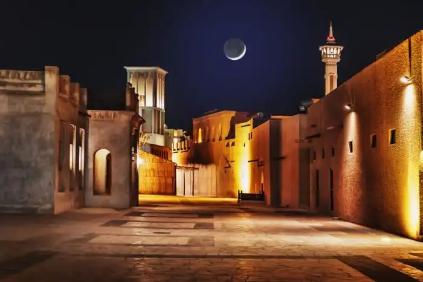

About
Dubai is a vibrant city with a rich culture and history. It is a popular tourist destination, and for good reason. There are many things to see and do in Dubai, from exploring the old city to taking a desert safari.
How to Go
The best way to get to Dubai is by flying into Dubai International Airport (DXB). The airport is located just outside the city, and there are many transportation options available to get you to your hotel or other destination.
Where to Stay
There are many great hotels in Dubai, ranging from budget-friendly options to luxurious resorts. Some of the most popular areas to stay in include Downtown Dubai, Jumeirah Beach, and Deira.
What to See and Do
There are endless things to see and do in Dubai. Here are a few of the most popular attractions:
- The Burj Khalifa: The tallest building in the world, the Burj Khalifa is a must-see for any visitor to Dubai. You can take the elevator to the top for stunning views of the city.
- The Dubai Mall: The largest mall in the world, the Dubai Mall is home to over 1,200 stores, including many luxury brands. There is also an indoor ski slope, an aquarium, and a cinema.
- The Palm Jumeirah: An artificial island in the shape of a palm tree, the Palm Jumeirah is home to some of the most luxurious hotels and resorts in the world. You can take a boat tour around the island or visit one of the many beaches.
- The Dubai Museum: The Dubai Museum tells the story of the city's history and culture. You can learn about the traditional way of life in Dubai, as well as the city's rapid development in recent years.
- The Bastakiya Quarter: The Bastakiya Quarter is a historic district in Dubai. You can wander through the narrow streets and alleyways and admire the traditional Arabian 

Burj Khalifa(For more information click on this link)

Dubai Mall(For more information click on this link)

Palm Jumeirah(For more information click on this link)

Dubai Museum(For more information click on this link)
Bastakiya Quarter(For more information click on this link)